Blue Iris & CodeProject.AI Integration
This guide covers the deployment and configuration of Blue Iris 5 alongside the CodeProject.AI Server on a Windows PC.
Hardware Acceleration
This system utilizes an Intel CPU with Quick Sync Video. Enabling hardware-accelerated video decoding drastically reduces the CPU load, allowing the server to handle a much higher quantity of high-resolution cameras simultaneously.
CodeProject.AI
AI backend download link: CodeProject.AI GitHub
1. General Blue Iris Settings
Storage Configuration
Efficient storage management is critical for NVR performance. I recommend splitting your storage into four distinct folders. When the designated space fills up, Blue Iris will automatically delete the oldest clips to make room for new ones.
- db: Database files.
- new: Primary recording location (Allocated: 2.5 TB).
- alerts: Saved alert images for AI and notifications (Allocated: 200 GB).
- stored: Long-term saved recordings (Allocated: 200 GB).
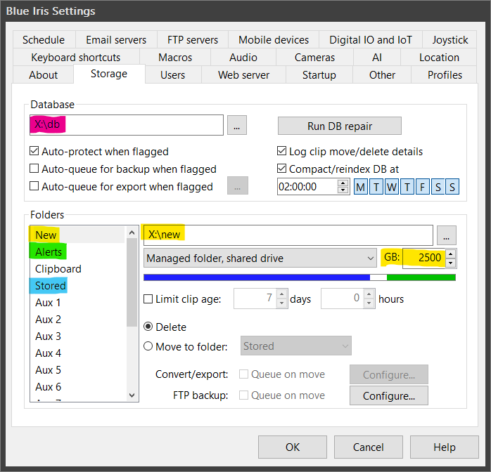
Global Camera Settings
Ensure that Hardware accelerated decode (Intel Quick Sync) is enabled globally so Blue Iris can offload the processing to the integrated GPU.
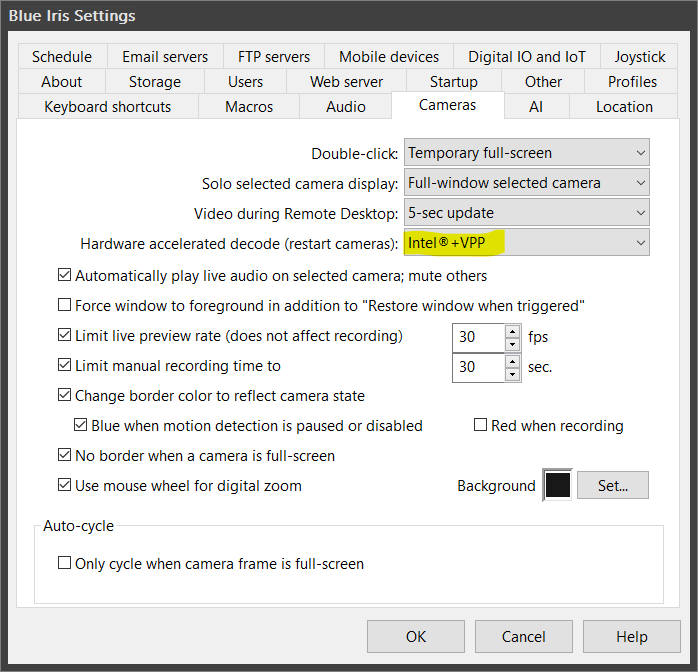
CodeProject.AI Configuration
I use a specific set of custom models for accurate object detection:
ipcam-animal, ipcam-combined, ipcam-dark, ipcam-general, ipcam-plate, and actionnetv2.
To detect these specific entities, the following objects are defined in the AI settings:
- Persons:
person,people - Vehicles:
vehicle,car,DayPlate,NightPlate,bicycle,motorbike,bus,train,truck,boat - Wildlife:
cat,dog,horse,sheep,cow,elephant,bear,zebra,giraffe,bird,deer,rabbit,raccoon,fox,skunk,squirrel
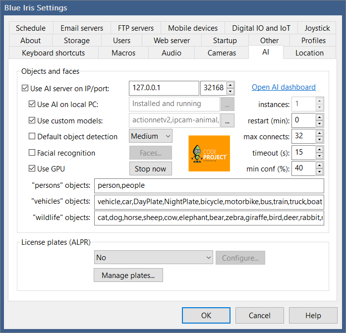
License Plate Recognition
LPR (License Plate Recognition) is not currently configured, as the current camera angles do not provide the necessary trajectory to recognize plates accurately.
2. Reolink Camera Configuration (On-Device)
Before adding the cameras to Blue Iris, log directly into the Reolink web interface to configure the network and streams. The strategy is to utilize two streams: a low-quality stream recorded constantly, and a high-quality stream triggered by AI movement.
Stream Settings:
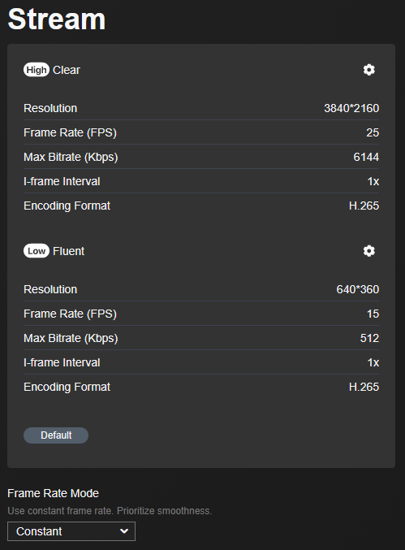
Network Settings:
- Bind a Static IP to the camera.
- Set a custom NTP server (allowed through OPNsense firewall rules) to keep timestamps perfectly synced.
- Enable RTSP and ONVIF protocols.
3. Camera Settings in Blue Iris
Once the camera is prepared, add it to Blue Iris:
1. Connection & Orientation: Connect to the Reolink IP, establish the streams, and configure the max framerate and camera orientation.
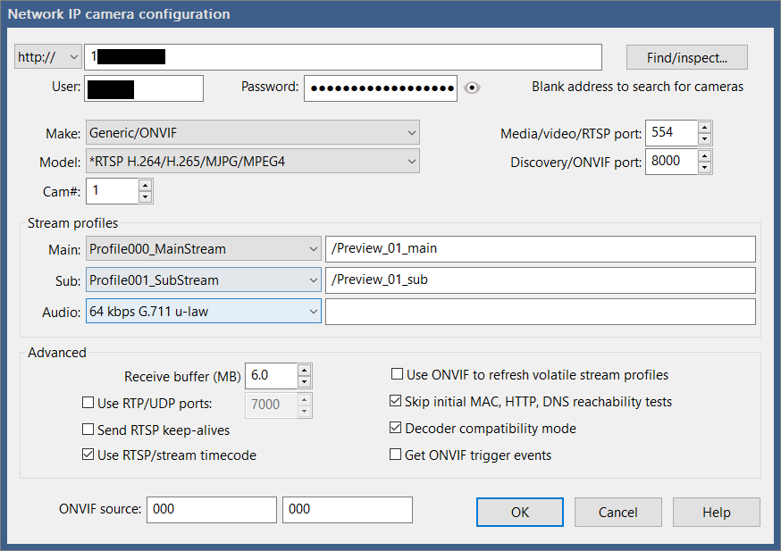
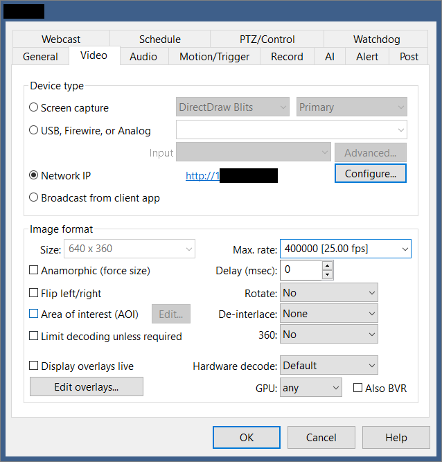
2. Motion Sensor: Configure the standard Blue Iris motion sensor parameters.
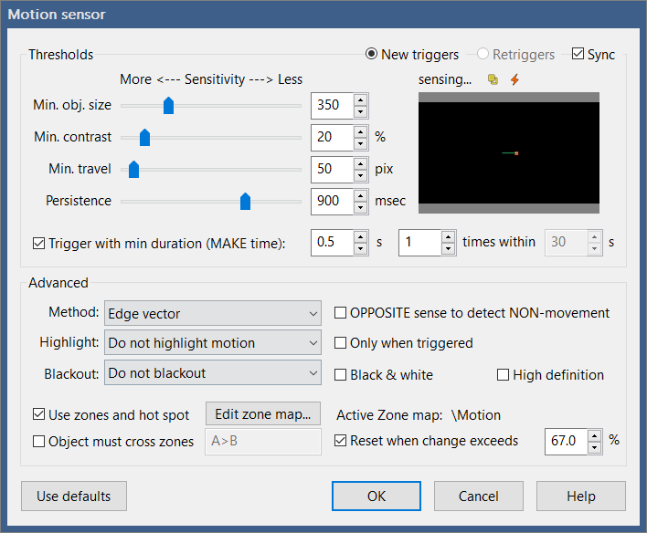
3. Recording Format: Set the recording mode to Continuous sub + Alerts. Ensure the format is set to BVR and record "Direct to disk" without any additional compression to save CPU cycles.
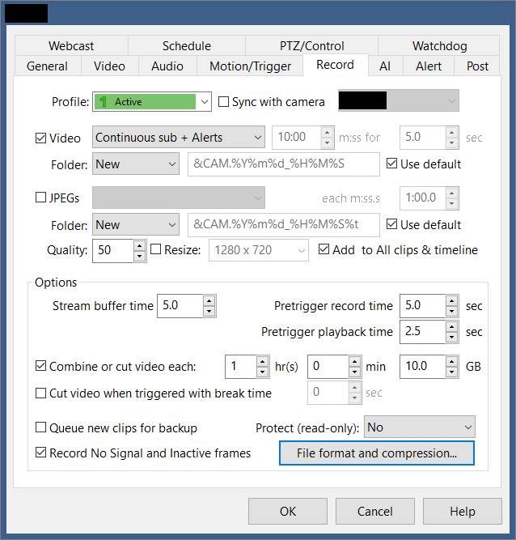
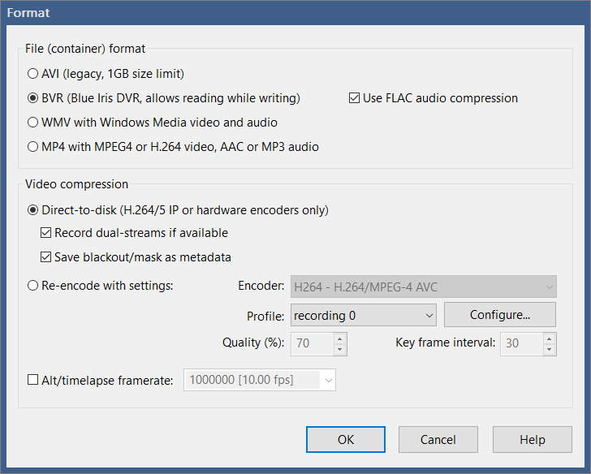
4. AI Alerts & Motion Zones: I primarily use the ipcam-combined model. Set the AI to confirm objects with over 65% confidence (tweak this depending on your environment). Map out different motion zones to categorize alerts, and configure the camera to send notifications based on these specific zones.
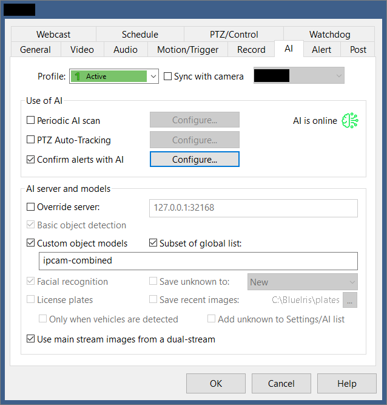
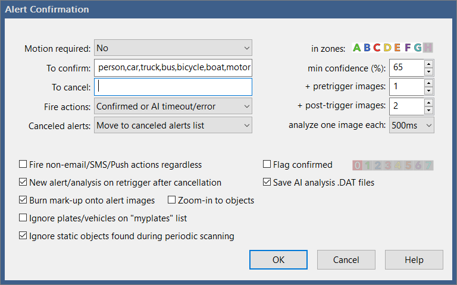
5. Alert Actions: Set up a trigger action to execute a local script that will push a notification to Signal.
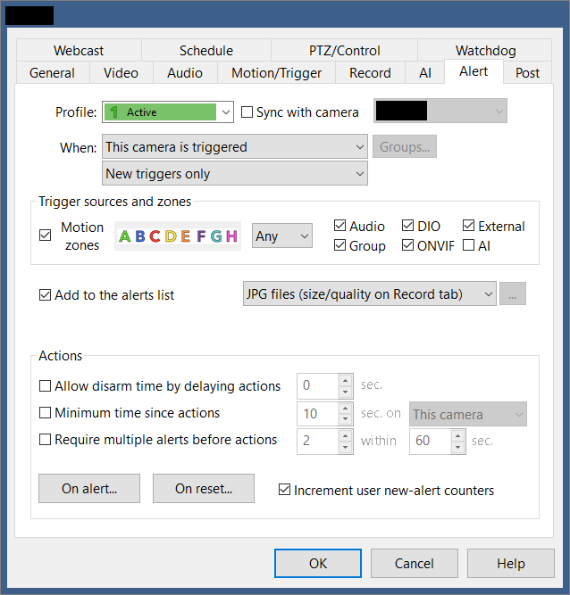
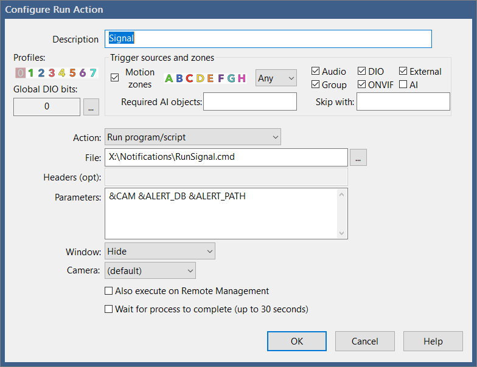
4. Signal Messenger Notifications
Instead of relying on standard email or SMS, alerts are pushed directly to a Signal group containing a snapshot and a link to the recording.
This is handled by a Docker container running the Signal CLI REST API.
Dedicated Signal Account
Follow the repository documentation to link the container to a Signal account. It is highly recommended to register a new, dedicated Signal phone number specifically for your homelab alerts.
Notification Scripts
Blue Iris triggers a Batch file (RunSignal.cmd), which securely passes the variables to a PowerShell script (Signal.ps1) to handle the actual API payload.
1. The Trigger Script:
Save this as RunSignal.cmd in your Blue Iris scripts folder.
@echo off
setlocal
set "CAMERA_NAME=%1"
set "CLIP_LINK=%2"
set "PHOTO_PATH=%3"
powershell -ExecutionPolicy Bypass -File "Signal.ps1" -CAMERA_NAME "%CAMERA_NAME%" -CLIP_LINK "%CLIP_LINK%" -PHOTO_PATH "%PHOTO_PATH%"
2. The Execution Script:
Save this as Signal.ps1.
Note: Ensure the $PICFolder variable matches the actual drive letter and path of your Blue Iris "alerts" folder and replace information that is contained in <>.
param(
$CAMERA_NAME,
$CLIP_LINK,
$PHOTO_PATH
)
$PICFolder="X:\alerts"
$TMPFILE = [Convert]::ToBase64String([IO.File]::ReadAllBytes("$PICFolder\$PHOTO_PATH"))
$message = "Motion detected: $CAMERA_NAME https://<YOUR_BLUE_IRIS_URL>/ui3.htm?rec=$CLIP_LINK"
$number = "<YOUR_PHONE_NUMBER>"
$recipients="<YOUR_GROUP_ID>"
$json = @{
"message"="$message"
"base64_attachments" = @($TMPFILE)
"number"="$number"
"recipients"=@("$recipients")
} | ConvertTo-Json
Invoke-RestMethod -Uri "http://<YOUR_SINGAL_CLI_IP>/v2/send" -Method Post -ContentType 'application/json' -Body $json
Bonus: Create a Signal Group via API
If you need to programmatically create the Signal group to hold these alerts, you can run this standalone PowerShell snippet:
$recipients="<PHONE_NUMBER_YOU_WANT_TO_ADD>"
$json = @{
"description"="Home Security Alerts"
"group_link" = "disabled"
"name"="NVR Alerts"
"members"=@("$recipients")
} | ConvertTo-Json
Invoke-RestMethod -Uri "http://<YOUR_SINGAL_CLI_IP>/v1/groups/<YOUR_PHONE_NUMBER>" -Method POST -Header @{"Accept" = "application/json"} -ContentType 'application/json' -Body $json